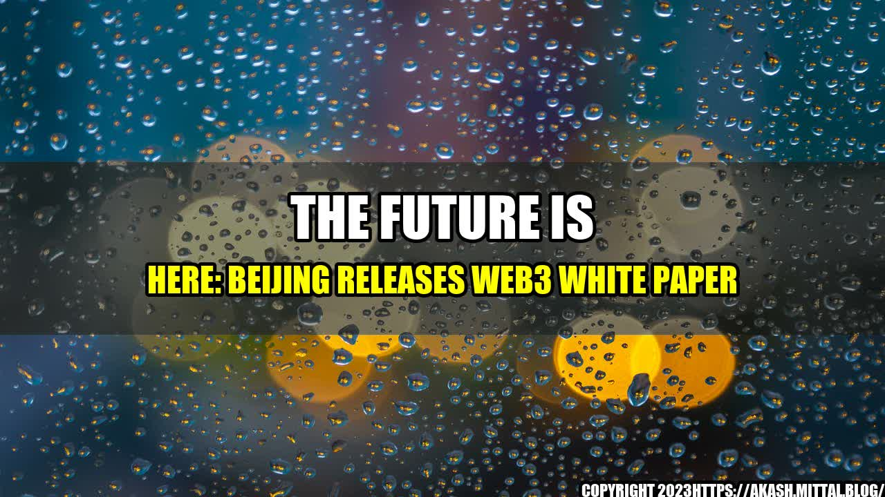

The Rise of Web3: A Glimpse into the Future

Once upon a time, there was a boy named Jack. Growing up in a small village, Jack always dreamed of exploring the world beyond his hometown. One day, he decided to set out on an adventure and came across a magical portal that transported him to a parallel universe.
This sounds like a fairy tale, but the truth is, we are about to embark on a similar kind of journey – one that will take us beyond the boundaries of what we know today. The release of the Beijing Government's Web3 White Paper marks the beginning of a new era – an era where the internet is about to evolve into something much greater, and the opportunities for innovation and creativity are endless.
What is Web3?
Web3 is the next generation of the internet – a decentralized, blockchain-based network that will change the way we interact online. It will enable us to exchange value, build trust, and create new forms of cooperation in a way that was not possible before.
Web3 is about putting the user back in control of their data, enabling them to use it in a way that benefits them and society as a whole. It is about creating a more open, transparent, and secure internet that is no longer controlled by a few large corporations.
Web3
The potential for Web3 is vast, and we are only just beginning to scratch the surface. Here are some examples of what Web3 can do:
- Tokenization of assets: Web3-enabled applications can create digital tokens to represent assets, such as real estate, art, or even social status. These tokens can be traded and exchanged just like any other asset, creating new opportunities for investment and ownership.
- Decentralized finance (DeFi): Web3 can enable financial transactions to be conducted without intermediaries, such as banks or exchanges. This can lead to lower fees, faster transactions, and greater access to financial services for people who are currently underserved by the traditional system.
- Improved data privacy: With Web3, users can control their own data and choose how it is used. This can help protect personal privacy and prevent data breaches.
What the Web3 White Paper Means for the Future
The release of the Web3 White Paper is a significant moment in the history of the internet. Here are three key takeaways:
- Web3 is not just a buzzword: While there has been a lot of hype around blockchain and decentralized networks, Web3 is a real, tangible vision for the future of the internet. The white paper provides a clear roadmap for how this vision can be realized.
- The Beijing Government is taking the lead: The fact that the Beijing Government released the Web3 White Paper is a clear indication of how seriously they are taking this technology. They recognize the potential it has to transform industries and improve people's lives and are willing to invest in it.
- Collaboration is key: Web3 is a complex system that requires collaboration and cooperation from many different stakeholders. The white paper acknowledges this and calls for a "multi-party governance" model to ensure that everyone's interests are represented.
Practical Tips for Embracing Web3
Here are some practical tips for individuals and organizations looking to embrace Web3:
- Learn the basics: Take the time to understand what Web3 is and how it works. There are many resources available online that can help you get started.
- Experiment with Web3-enabled applications: There are already many applications being built on Web3, such as decentralized marketplaces and social networks. Try using these applications to get a better sense of how Web3 can be used in practice.
- Get involved in the community: Web3 is a collaborative effort, and there are many online communities and forums where you can connect with others who are interested in this technology. Join the conversation, share your ideas, and learn from others.
Conclusion
The release of the Web3 White Paper is a sign that we are entering a new chapter in the evolution of the internet. This technology has the potential to transform industries, improve people's lives, and create new opportunities for innovation and creativity. While there is still much work to be done before Web3 becomes mainstream, the future is looking bright, and we should all be excited about the possibilities that lie ahead.
Reference URLs and Hashtags
Reference URLs:
Hashtags:
- #Web3
- #Blockchain
- #Decentralization
- #InternetOfValue
- #BeijingGovernment
Category: Technology
Curated by Team Akash.Mittal.Blog
Share on Twitter Share on LinkedIn